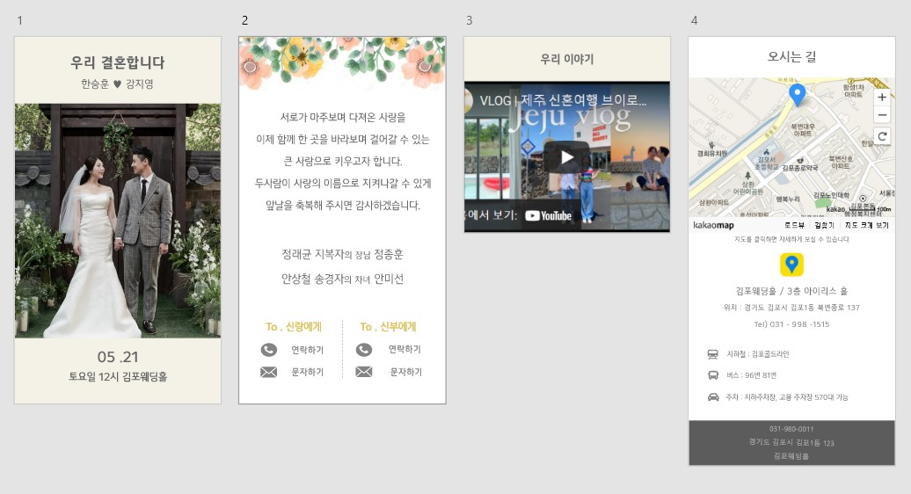

프로젝트 개요
Plan :
청첩장을 심플하지만 트랜디하게 결혼식 초대와 정확한 위치를 제공하는게 목표로 만들었습니다.
표지(위 1장)를 기본 청첩장과 다르게 사진위에 결혼식과 밑에는
날짜와 장소를 기입함으로 심플하면서 명확한 표지를 만들었습니다.
2장은 결혼식장을 상상하며 싱그럽고 밝은 꽃 베너를 배치하여 결혼식을 여는 느낌을
주었습니다.
3장 트랜드에 맞게 결혼식 주인공들의 이야기, 여행 등 경험을 영상으로 제작하면 결혼식 주인공과 사용자들에게 기억과 추억으로 남으면 좋겠다고 생각하여 배치했습니다.
- 작업기간
2021 . 08 . 01 ~ 2021 . 08 . 07 - 기여도
100% - URL(깃허브)
https://skychl00712.github.io/invation/
- #메인컬러
- #작업도구